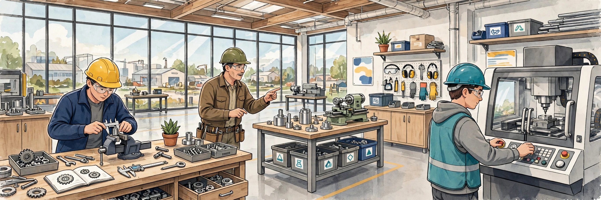
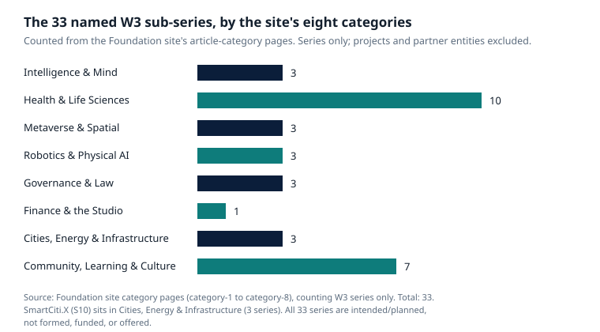

SmartCiti.X long-form series · AGI Future Foundation
Building a Manufacturing Workforce
Apprenticeships, Safety, and the Skilled-Trades Gap

American manufacturing has a worker problem, and it has had one for long enough that the problem now has a literature. Factories are hiring, machines are getting more complex, experienced workers are retiring, and the pipeline that is supposed to replace them — schools, training programmes, apprenticeships — is not keeping up. The result is not a single shortage but a set of them, layered on top of each other: too few applicants, too few with the right skills, too few who stay. This article is about that layered problem, about the apprenticeship model that has actually solved it before, about safety as the foundation of any workforce, and about what SmartCiti.X — a proposed manufacturing and training venture that does not yet exist — would have to do to be part of the answer rather than part of the noise.
The gap, in numbers
Start with the national picture, because it sets the scale of everything that follows. A 2024 joint study by the Manufacturing Institute and Deloitte, "Taking charge: Manufacturers support growth with active workforce strategies," found that U.S. manufacturing could need as many as 3.8 million workers between 2024 and 2033, and that if workforce challenges are not addressed, more than 1.9 million of those jobs could go unfilled. About 2.8 million of the need, the study's reporting notes, comes from replacing retiring workers rather than from growth — the workforce is aging out faster than it is being replaced. Some 65% of manufacturers polled said attracting and retaining talent was their primary business challenge, and about 90% said they were forming at least one partnership to better attract and retain employees. These are estimates and survey results, not a census, and the 1.9 million figure is a conditional warning — what could go unfilled if nothing changes — not a forecast of what will happen. But the direction and the order of magnitude are consistent across every serious study of the sector: manufacturing needs millions of workers, and the current pipeline does not supply them.
The occupational detail sharpens the picture. The Bureau of Labor Statistics' 2025–35 employment projections show industrial machinery mechanics growing 17.8% — from about 446,900 jobs to about 526,600, with roughly 44,400 openings a year — the fastest growth in its mechanical-skills group. Heating, air conditioning and refrigeration mechanics are projected to grow 10.9%, with about 40,600 openings a year; electricians 9.2%, with about 72,700 openings a year. All occupations together are projected to grow 3.5%. The pattern is the important thing: the jobs that keep a factory running — the mechanics, the electricians, the HVAC technicians — are growing two to five times faster than the economy as a whole. A factory that cannot hire a maintenance technician cannot run its robots, however many it buys.
| Occupation | Jobs, 2025 | Projected, 2035 | Growth | Openings per year |
|---|---|---|---|---|
| Industrial machinery mechanics | 446,900 | 526,600 | +17.8% | ~44,400 |
| Heating, air conditioning & refrigeration mechanics | 440,900 | 489,100 | +10.9% | ~40,600 |
| Electricians | 821,000 | 896,900 | +9.2% | ~72,700 |
| All occupations | — | — | +3.5% | — |
Source: U.S. Bureau of Labor Statistics, Employment Projections 2025–35. Projections, not guarantees; openings include replacement hiring.
There is a second gap inside the first, and the Deloitte study names it: an applicant gap, not only a skills gap. Manufacturers are struggling to get enough people to apply in the first place. That matters because it changes the remedy. A skills gap is fixed by training the people who show up. An applicant gap is fixed by making the work worth showing up for — wages, hours, conditions, a credible path to a career rather than a job. The Manufacturing Institute's own findings point the same way: about 47% of manufacturers polled said apprenticeships, work-study programmes or internships would be the most effective way of increasing interest in the industry, and about 47% said flexible work arrangements — flex shifts, shift swapping, split shifts — were their top retention tool. The workforce problem, in other words, is not only a training problem. It is a job-quality problem, and any venture that proposes to build a manufacturing workforce without addressing job quality is proposing to fill a bucket with a hole in it.
The model that works: earn while you learn
There is a model in American industry that has solved this problem before, at scale, for more than a century, and it is not a new idea. It is the registered apprenticeship, and its most developed form is the building trades' joint labour-management system.
North America's Building Trades Unions (NABTU) and their contractor partners operate registered apprenticeship programmes that the unions themselves describe as "the other four-year degree": a debt-free education that pays a wage from day one, with incremental raises as skills increase, healthcare coverage, and retirement benefits. The structure is simple and, for that reason, durable. An apprentice works on real jobs under journeymen and attends related classroom instruction — typically around 160 hours a year in programmes such as the carpenters', with first-period wages often around 40% of a journeyworker's wage, rising as the apprentice progresses. Programmes generally run three to five years depending on the craft, and all building trades apprenticeship programmes are registered with the U.S. Department of Labor's Office of Apprenticeship or a state apprenticeship agency, which certifies the training standards, curricula, and instructor qualifications. On completion, the apprentice becomes a journey-level worker, with a trade certificate from the state and from the union.
The scale is what makes the model worth studying rather than merely admiring. The building trades have a record 316,000 registered apprentices across all crafts, and train seven out of every ten construction apprentices in the United States. About 75% of construction apprentices are trained in the joint apprenticeship training committee (JATC) system, run cooperatively by unions and their contractor partners. The system operates more than 1,600 training centres in the United States, with some 20,000 instructors, and its affiliated unions and partner contractors have registered an average of 60,000 new apprentices annually since 2016. NABTU's own materials put the average wage for a fully proficient worker who has completed an apprenticeship at around $70,000 a year, and claim a career earnings advantage of roughly $300,000 over non-apprenticeship participants. Those are the unions' figures, and they should be read as such — but the structure they describe is independently verifiable: registered programmes, joint committees, training centres, and a record number of apprentices.
Three features of the model matter for any new manufacturing venture. First, the apprentice is paid from day one. That is not a perk; it is the mechanism by which the model reaches people who cannot afford to stop earning in order to learn. A training programme that asks a learner to choose between a paycheque and a classroom has already selected its audience, and it is not the audience manufacturing most needs. Second, the training is jointly governed — labour and management together, through the JATCs — which means the curriculum is written by the people who do the work and the people who employ them, and neither side can unilaterally lower the standard. Third, the programme ends in a credential that is recognised beyond the employer who trained the apprentice. A journey-level certificate travels; a company-specific badge does not.
The Manufacturing Institute's FAME programme (Federation for Advanced Manufacturing Education) applies the same logic to manufacturing itself: an employer-sponsored apprenticeship-style programme training multi-skilled maintenance technicians, which the Institute highlights in its workforce work. FAME is a real, operating programme, and it is the closest existing model to what a manufacturing workforce venture would need to build or join. A new venture does not need to invent apprenticeship. It needs to join the system that already exists, meet its standards, and be honest about how long that takes.
What apprenticeship is not
It is worth saying plainly what the apprenticeship model is not, because the word gets used loosely. It is not an internship. An internship is short, often unpaid or low-paid, and ends without a credential. An apprenticeship is multi-year, paid from day one, registered with a government agency, and ends in a recognised journey-level credential. It is not a bootcamp. A bootcamp compresses instruction into weeks; an apprenticeship stretches it over years of supervised work, because the skills it teaches cannot be compressed — they are built by repetition on real work, under people who know what they are doing. It is not a hiring pipeline with a training label. A programme that recruits learners, trains them briefly, and places them in jobs without a registered standard, without rising wages, and without a portable credential is a staffing operation, not an apprenticeship, and calling it one borrows the credibility of a system it has not joined.
This matters for SmartCiti.X because the venture's planning documents set a gate for its proposed second funding tranche that includes a signed union agreement. That gate is the difference between a venture that trains workers and a venture that uses workers. A signed agreement, if it is a real one, would have to answer the questions the apprenticeship model answers: who sets the curriculum, who pays the apprentice and how much, what the wage progression is, what credential the apprentice earns, and who the apprentice can take that credential to. Until those questions have written answers, agreed with a union, there is no apprenticeship — there is a plan for one. The platform's own scenario files are honest about this: no hall is mapped to any scenario, and the SmartCiti.X bundle's README states that zero of the 111 halls in its roster have signed off by a named practitioner. A named hall is not a partner. That standard should apply to the whole venture, not only to its software.
Safety is the curriculum
Every workforce article eventually reaches safety, usually as a compliance section near the end. That ordering is wrong. Safety is not a module in a manufacturing workforce programme; it is the programme's foundation, because a workforce that is not safe is not a workforce — it is a liability, and a human cost.
The legal baseline is clear, and it is worth stating because it shapes everything a training programme must teach. Under OSHA's personal protective equipment standard, employers must assess the workplace for hazards, provide appropriate PPE at no cost to employees, ensure it fits, and train each affected worker on when PPE is necessary, what kind is necessary, how to put it on, adjust, wear and take it off, the limitations of the equipment, and its proper care, maintenance, useful life and disposal. Workers must demonstrate an understanding of the training and the ability to use PPE properly before doing work that requires it, and must be retrained when workplace changes or their own performance shows they have not retained the skill. Machine guarding (29 CFR 1910.212) and lockout/tagout (29 CFR 1910.147) set the rules for working around and servicing machines. These are employer obligations, not learner obligations — the employer assesses, provides, trains, and verifies — and a programme that presents safety as the learner's personal responsibility has the law backwards.
The SmartCiti.X learner platform is built around that ordering. Its safety-procedures scenario is the one scenario that applies to every learner before any trade task: name the hazards on the bay's hazard board, select the PPE the hazards call for, check the fit, work the task with PPE on, and report — log the run and any near-miss at the report desk. The check at the final step is "log complete; near-misses reported, not hidden," which is the single most important sentence in the platform's safety design. A near-miss reporting culture is what separates a safe workplace from a lucky one: the workplaces with the fewest injuries are not the ones with the fewest incidents, they are the ones where incidents are reported, investigated, and learned from. A programme that punishes reporting, or that treats a near-miss as a black mark on a learner, will get exactly the silence it rewards — and then, one day, the injury that the silence was hiding.
Safety also has a practical dimension that a new venture has to budget for. PPE costs money, and it is the employer's money. Training costs time, and it is time taken from production. Guarding costs money, and it slows a line down. A business plan that treats those costs as overhead to be minimised will, sooner or later, treat safety as overhead to be minimised. The Tranche 2 gates in SmartCiti.X's planning documents include permits, inspections, insurance, and safety complete at the proposed Louisiana site — which is the right gate, in the right order: safety systems before production, not after it. But a gate is only as strong as its verification. "Safety complete" needs a definition — which inspections, by whom, against which standards, with what documentation — and a named person who certifies it. Until that definition exists in writing, the gate is a sentence, not a safeguard.
The skilled-trades gap is a pipeline problem, not a marketing problem
It is tempting to treat the workforce gap as a communications problem: young people do not know about the trades, so tell them about the trades. Outreach matters — the platform's K-12 foundations scenario and its outreach scenario are built on the belief that early exposure helps — but outreach without a pipeline is a poster. A young person who gets excited about the trades and then finds no apprenticeship, no paid route in, and no one to teach them has been misled, not recruited.
The pipeline has four stages, and a venture has to be honest about which stage it is actually building. The first is exposure: school visits, demonstrations, the kind of thing a VR headset is genuinely good at — a learner can try a trade for ten minutes without a workshop. The second is entry: a paid, registered route in, which is the apprenticeship. The third is training: years of supervised work and instruction, with rising wages and a credential at the end. The fourth is retention: the wages, hours, conditions, and career path that keep a trained worker in the trade rather than losing them to the first employer who pays more for the same skills. Most workforce initiatives fail at the second stage. They build the exposure and call it a pipeline, and then wonder why nobody arrives. The building trades' model works because it built all four stages, and because the second stage — the paid route in — is the one it protects most fiercely.
For SmartCiti.X, the honest accounting is that it has built a demonstration of the first stage and a design for the second. The learner platform's six scenarios are exposure and early training; the apprenticeship, the union agreement, the wage progression, and the credential do not exist yet. That is not a criticism of the demonstration — a demonstration is supposed to be small — but it is a criticism of any telling of the story that presents the demonstration as the pipeline. The pipeline is the agreements, the money, the coaches, and the years. The demonstration is the proof that the team can build the tooling. Both matter, and they are not the same thing.

What a factory actually needs
A manufacturing workforce is not one kind of worker. A floor needs operators, maintenance technicians, electricians, HVAC technicians, programmers, quality inspectors, and supervisors — and it needs them to work together, which is a skill in itself. The platform's eleven skill strands gesture at this breadth: coordination, documentation, inspection, layout, leadership, machines, materials, procedure, safety, tools, troubleshooting. Six scenarios cover some of those strands well — safety and procedure in all six, tools, machines, coordination and documentation in two each — and others barely or not at all: materials, layout and troubleshooting in one scenario each, inspection and leadership in none. That unevenness is honest, and it is also a map of what a real curriculum would have to build: the strands with no scenario are not unimportant, they are unbuilt.
The manufacturing workforce also needs something the trades literature calls "multi-skilled" technicians — people who can work across mechanical, electrical, and controls problems rather than in one narrow lane. The Manufacturing Institute's study highlights exactly this: the growth is in higher-skill roles, and the roles it names — statisticians, data scientists, engineers, software developers, industrial maintenance technicians — are roles that blend disciplines. A training programme that produces only narrow specialists will produce workers who cannot diagnose the fault that sits at the boundary between the mechanical and the electrical, which is where most real faults live. The platform's scenarios already point in this direction: the HVAC scenario requires reading pressures, temperatures, and airflow together; the robotics scenario requires working across a cell, a panel, and a handover. The curriculum that follows would need to make that cross-disciplinary habit explicit, not accidental.
And the workforce needs supervisors — the people who run the floor, schedule the work, coach the apprentices, and decide when to stop the line. Leadership is one of the two strands with no scenario in the platform, and that absence is a warning. A venture that trains technicians and not supervisors will have to hire its supervisors from elsewhere, which means it has not built a workforce at all — it has built the bottom of one. The honest version of the plan would include a supervisor track, written with the same care as the technician track, and measured by the same outcomes.
Sites, money, and the order of operations
SmartCiti.X's plan names Louisiana as the first launch, with Indiana to follow, and Nebraska in the wider plan. No site, city, address, price, or seller is named, because none is signed — the sites are proposed watchlist properties only. That restraint is correct, and it is worth understanding why it matters for a workforce article. A training programme is, in the end, a place: a building with bays, machines, a safety station, a report desk, and room for a cohort. Until the building exists, the programme is a curriculum without a classroom. The Tranche 2 gates in the planning documents recognise this: a first site closed or leased, permits, inspections, insurance and safety complete, site staff hired. Those gates are in the right order — site, then safety, then staff, then learners — and a venture that reverses them, recruiting learners before it has a building to put them in, is selling a promise it cannot keep.
The money side has the same shape. The planning documents suggest a $10 million raise, tranched $5 million plus $5 million, with a suggested $25 million pre-money valuation and a planned use of $4 million for manufacturing, $3 million for the first Louisiana and Indiana sites, $2 million for AR/VR training, and $1 million for working capital and legal costs. Those figures are planning figures only — never money raised, never a valuation achieved — and this article does not repeat them as facts. But their structure is worth a reader's attention, because it shows where the plan puts its weight: the largest share on manufacturing, the second on sites, the third on training. A workforce programme that is funded as the third priority will be built as the third priority, and the coaches, the curriculum, and the apprenticeship agreements will arrive late. If the workforce is the venture's reason for existing, the funding order should show it. If the workforce is a supporting activity, the plan should say so honestly, and be judged on the manufacturing alone.
The sequencing question — training first or manufacturing first — has no clean answer, and the plan should not pretend it does. Training first means technicians ready when the machines arrive, but a training programme without a floor is a classroom with expensive toys. Manufacturing first means a real floor to train on, but a factory without technicians is a building full of machines nobody can run. The practical answer is that they grow together, in small steps, with the training always slightly ahead of the machines — because a machine without a technician is a liability, while a technician without a machine is merely waiting. The platform's current state reflects that order: the simulation exists, the factory does not. That is the right order for a demonstration. It would be the wrong order for a business.
The BuilderSpace connection, stated honestly
The Foundation runs a separate project, BuilderSpace, a startup community tour with events in 2027. It is a separate project, not a SmartCiti.X site, venue, sponsor, or commitment, and this article does not merge them. The honest connection is narrower: a tour that brings builders into new regions is an audience for a workforce story, and a workforce venture that can show a real pipeline — real apprentices, real coaches, real outcomes — is a credible stop on such a tour. But the tour cannot substitute for the pipeline, and the pipeline cannot be promised on the tour's schedule. If SmartCiti.X ever has a cohort to show, that is a story worth telling on a tour. Until then, the two projects should be described separately, and any claim that one supports the other should be treated as a plan, not a fact.
What would have to be true
The list from the companion articles applies here, with the workforce specifics added. A corporation would have to exist. A site would have to exist, with permits, inspections, insurance, and safety complete. A union agreement would have to be signed, answering the apprenticeship questions: curriculum, wages, wage progression, credential, and portability. Coaches would have to be hired — journeymen and technicians who can teach, paid for their time. A curriculum would have to exist beyond the six demonstration scenarios, covering the strands the platform does not yet cover, including inspection and leadership. An assessment model would have to exist that measures outcomes, not enrolment: completion, external credentials, employment a year later, retention in the trade in five years. And the job itself would have to be worth taking: wages that support a family, hours a person can plan a life around, and conditions that keep a trained worker in the trade. None of that exists today. The demonstration exists. The national evidence for the gap exists. The model that has closed the gap before exists. What does not exist yet is the venture that puts them together — and that is the work ahead.
Frequently asked questions
How big is the manufacturing workforce gap?
A 2024 Manufacturing Institute and Deloitte study found U.S. manufacturing could need as many as 3.8 million workers between 2024 and 2033, with more than 1.9 million at risk of going unfilled if workforce challenges are not addressed. About 2.8 million of the need comes from replacing retiring workers. The 1.9 million figure is a conditional warning, not a forecast.
What is a registered apprenticeship?
A multi-year, paid training programme registered with the U.S. Department of Labor's Office of Apprenticeship or a state apprenticeship agency, combining on-the-job training under journeymen with related classroom instruction, ending in a recognised journey-level credential. It is not an internship, a bootcamp, or a short hiring pipeline.
How many apprentices do the building trades train?
A record 316,000 registered apprentices across all crafts, training seven out of every ten construction apprentices in the United States, through more than 1,600 training centres. About 75% of construction apprentices are trained in the joint apprenticeship training committee (JATC) system.
Do apprentices get paid?
Yes — that is the point of the model. Apprentices earn a wage from day one, with incremental raises as skills increase, plus healthcare coverage and retirement benefits in the building trades' programmes. The building trades describe it as a debt-free education and "the other four-year degree."
What does OSHA require employers to do about safety?
Employers must assess the workplace for hazards, provide appropriate PPE at no cost to employees, ensure it fits, and train each affected worker on when PPE is necessary, what kind, how to put it on, adjust, wear and take it off, its limitations, and its proper care, maintenance, useful life and disposal. Workers must demonstrate understanding before doing work that requires PPE.
Is SmartCiti.X hiring or enrolling manufacturing workers?
Not today. SmartCiti.X is a proposed new corporation, not incorporated, filed, funded, or offered. There is no site, no factory, and no cohort. Inquiries go to the Foundation at x@agifuturefoundation.org.
Glossary
- Registered apprenticeship: a multi-year, paid training programme registered with the U.S. Department of Labor or a state agency, ending in a journey-level credential.
- JATC (Joint Apprenticeship Training Committee): a labour-management committee that runs a registered apprenticeship programme for a trade.
- Journey-level worker (journeyman): a worker who has completed an apprenticeship and is recognised as fully qualified in their trade.
- NABTU: North America's Building Trades Unions, the federation of building trades unions.
- FAME: the Federation for Advanced Manufacturing Education, the Manufacturing Institute's apprenticeship-style programme for multi-skilled maintenance technicians.
- PPE: personal protective equipment.
- Near-miss: an incident that could have caused harm but did not — reported and learned from, not hidden.
- Lockout/tagout: the procedure (OSHA 29 CFR 1910.147) for ensuring a machine cannot be restarted while it is being serviced.
References
- The Manufacturing Institute and Deloitte, "Taking charge: Manufacturers support growth with active workforce strategies" (April 2024), as summarised by the Manufacturing Institute. https://themanufacturinginstitute.org/study-manufacturing-in-u-s-could-need-up-to-3-8-million-workers/
- U.S. Bureau of Labor Statistics, Employment Projections 2025–35 — mechanical skills data. https://WWW.BLS.GOV/emp/skills/mechanical.htm
- LaborPress, "Unionized Building Trades Apprentice Programs Develop a Highly Skilled Workforce" (National Apprenticeship Day, 30 April 2025) — 316,000 registered apprentices, 7 of 10 construction apprentices. https://www.laborpress.org/unionized-building-trades-apprentice-programs-develop-a-highly-skilled-workforce-2/
- Thomas J. Kriger, "Registered Apprenticeship, the gold standard for workforce training," Union Label and Service Trades Department, AFL-CIO — the JATC system, 75% of construction apprentices, 1,650 training centres, "the other four-year degree." https://unionlabel.org/2018/05/23/nabtu/
- OSHA, Personal Protective Equipment — Safety and Health Topics page. https://www.osha.gov/personal-protective-equipment
- AGI Future Foundation, "SmartCiti.X — W3 Series S10, the Trade Craft Academy" (Article 33). https://www.agifuturefoundation.org/articles/article-33-smartciti-x.html
- AGI Future Foundation, The W3 Series — all 33 series. https://www.agifuturefoundation.org/series/index.html
- SmartCiti.X learner platform, scenarios (local files):
scenarios/scenarios.json,scenarios/safety-procedures.json, verified byscenarios/verify.mjs— six scenarios, five steps each, verified 2026-11-07.
Nothing in this article is legal, tax, or financial advice, and no signing, membership, payment, investment, or offering is made here. SmartCiti.X is proposed, not incorporated, filed, funded, or offered.